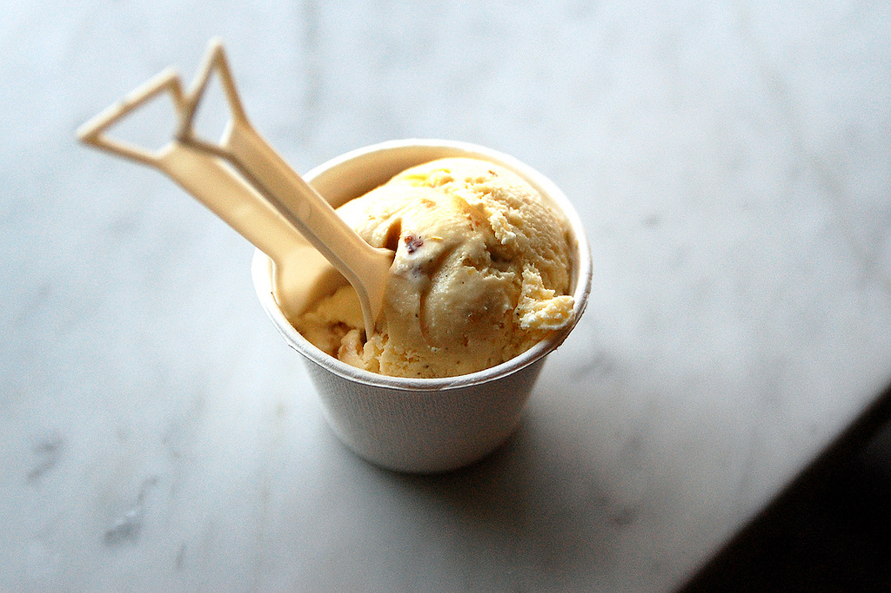

Explore Berkeley
Take a stroll down the famous Telegraph Ave
where you'll find art and music
around every corner.
If you're feeling hungry, be sure to visit the quaint Elmwood district,
to find yourself some of the best brunch and dessert places in the city.

If you're feeling adventurous, then put on a pair of tennis shoes because we're going on the Big C!
A hike that takes you to the top of the Berkeley hills where surpises await. . .

a huge swing to sit on
and the most beautiful view of the bay.